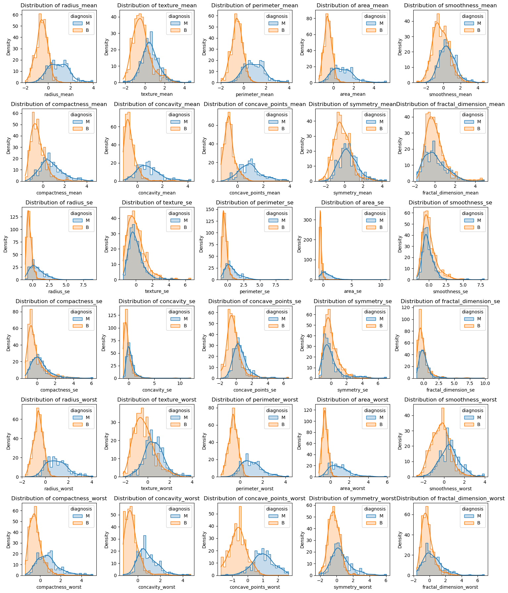
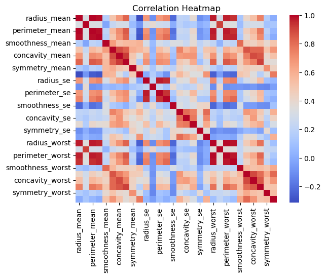
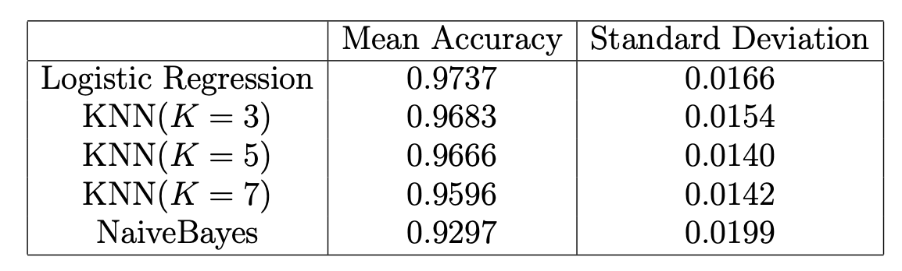
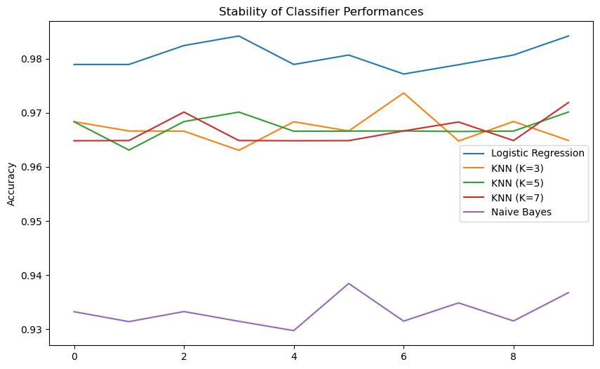
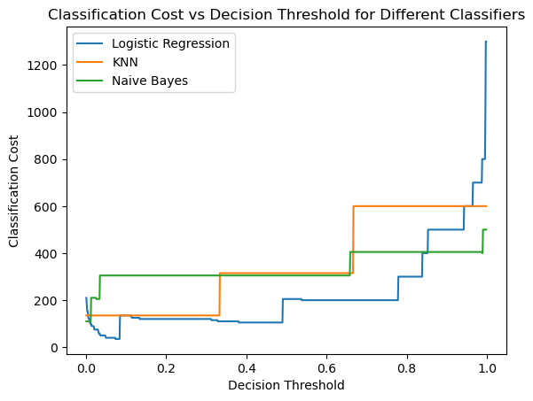

In this article, we explore into the Breast Cancer Wisconsin Data Set, a comprehensive compilation of 30 features from 569 breast masses, aimed at distinguishing malignant from benign cases using advanced classification techniques.
We will use three classifiers to classify whether a breast mass is malignant or benign: a logistic regression, a k-nearest neighbours classifier (KNN), and a Naive Bayes classifier.
Exploratory Data Analysis

The distribution plot shows that most of the mean values of the features are approximately normally distributed, while some of the variables, especially the standard error terms (denoted in the pattern `feature se’) have skewed distribution. We can also inspect that some of the covariates have significantly different distributions for the different diagnosis results, such as mean radius, mean perimeter, mean area, mean compactness, mean concavity, and mean concave points.
We should also briefly examine the correlation between the features to do the classification using naive Bayes classifier since it assumes conditional independence. Intuitively, we may think that perimeter and area should be highly correlated with the radius of the breast masses. The heatmap below agrees with our opinion.

Classification
Now we can so the classification. All three classifiers needs different model assumptions. The logistic Regression classifier assumes a linear relationship between the features and the log-odds of the target variable, while KNN assumes that instances of the same class are locally clustered in the feature space (local smoothness). Naive Bayes assumes that features are conditionally independent given the class label. Note that this is a strong assumption and may not hold in all real-world scenarios. In addition, we spot that the dataset contains features like radius, area, and perimeters, which are highly correlated. Therefore the Naive Bayes may not perform well on this dataset.
To compare the performance of three classifiers and assess their stability across different training/test set divisions, we use cross-validation, which involves splitting the dataset into multiple subsets and training the models on different combinations of these subsets. We use a k-fold cross-validation (we use the small letter k to differentiate from the \(K\) in KNN). We choose to split the dataset into 5 approximately equal-sized folds. The dataset is shuffled before splitting into folds to ensure randomness and avoid any potential ordering effects in the data. Then we iterate through each of the k folds. For each iteration, one fold is used as the test set, and we train the models using the remaining k-1 folds (training set). We compute the accuracy score for each iteration, and average the accuracy score from all k iterations to obtain a single mean accuracy score.
These procedures are done by using package sklearn. We use StratifiedKFold for the cross-validation, LogisticRegression, KNeighborsClassifier, GaussianNB for the classification model, and cross_val_score to assess the accuracy and stability. We choose \(K=3\), \(K=5\), and \(K=7\) for the numbers of neighbours for the k-nearest neighbours classifier.

The table above shows the performance of each classifier. We can see that the accuracy is all greater than 0.90 with a small standard deviation around 0.015, which shows that the three classifiers are accurate. Also, for the KNN classifier, the result shows that the mean accuracy is the largest when \(K=3\).
We repeat the entire k-fold cross-validation process 10 times across different random training/test set divisions for stability assessment. The figure below shows that the performance of all the classifiers is stable across different training/test set divisions, with the logistic regression classifier having the highest accuracy, and Naive Bayes having the lowest accuracy across all 10 iterations. The lower accuracy for the Naive Bayes may be because of the correlated features in the dataset. We can see that the performances of all three KNN classifiers are similar. We will choose \(K=3\) for further analysis when using KNN.

Cost
Suppose that wrongly classifying a breast mass as benign (false negative) has a cost of 100 while wrongly classifying a breast mass as malignant (false positive) has a cost of 5. We divide the dataset into 20-80 train-test sets, train the three models on the training set, and compute the classification costs using the test set. For each classifier, we plot the classification cost on a test set associated with different decision thresholds (from 0 to 1). Choosing a high threshold typically results in a higher precision (fewer false positives) but a lower recall (more false negatives) because the model is more selective in labeling instances as positive.

We can see that the classification costs for the three methods are slightly increasing for increasing thresholds. The costs are approximately lower than 600 for the KNN and Naive Bayes classifiers for all possible threshold values. The cost for logistic regression is the lowest among the three classifiers when the threshold is smaller than 0.8, but the cost increases rapidly when the threshold is larger than 0.8.
If we want to minimise the overall cost, we need to balance false positives and false negatives. In this scenario, we would like to set a lower threshold to minimise the cost associated with false negatives (malignant cases misclassified as benign). Logistic Regression models output probabilities, and you can adjust the threshold to control the trade-off between false positives and false negatives. I would recommend using the logistic regression with a threshold lower than 0.8, since it minimises the classification cost.